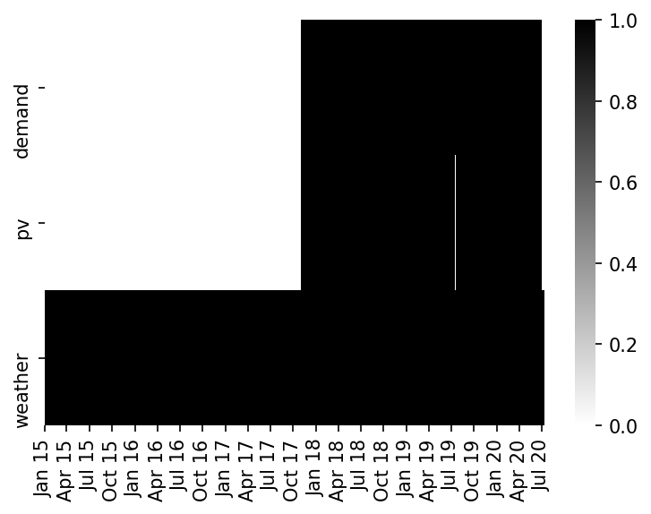
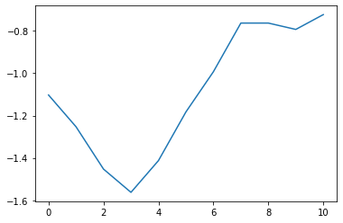

Data Cleaning¶
#exports
import numpy as np
import pandas as pd
import seaborn as sns
import matplotlib.pyplot as plt
from sklearn.model_selection import KFold
from sklearn.metrics import mean_absolute_error, mean_squared_error
from sklearn.linear_model import LinearRegression
from sklearn.ensemble import RandomForestRegressor, GradientBoostingRegressor
import os
import glob
from ipypb import track
from batopt import utils, retrieval
from IPython.display import JSON
User Inputs¶
raw_data_dir = '../data/raw'
cache_data_dir = '../data/nb-cache'
Loading the Raw Data¶
We'll start by loading in the demand data, first we have to determine the latest training set that is available for us to work with
#exports
def identify_latest_set_num(data_dir):
set_num = max([
int(f.split('_set')[1].replace('.csv', ''))
for f in os.listdir(data_dir)
if 'set' in f
])
return set_num
set_num = identify_latest_set_num(raw_data_dir)
set_num
4
We'll then load in and clean the datetime index of the dataset
#exports
def reindex_df_dt_idx(df, freq='30T'):
full_dt_idx = pd.date_range(df.index.min(), df.index.max(), freq=freq)
df = df.reindex(full_dt_idx)
return df
def load_training_dataset(raw_data_dir: str, dataset_name: str='demand', set_num=None, parse_dt_idx: bool=True, dt_idx_freq: str='30T') -> pd.DataFrame:
if set_num is None:
set_num = identify_latest_set_num(raw_data_dir)
allowed_datasets = ['demand', 'pv', 'weather']
assert dataset_name in allowed_datasets, f"`dataset_name` must be one of: {', '.join(allowed_datasets)} - not {dataset_name}"
df = pd.read_csv(glob.glob(f'{raw_data_dir}/{dataset_name}*set{set_num}.csv')[0].replace('\\', '/'))
if parse_dt_idx == True:
assert 'datetime' in df.columns, 'if `parse_dt_idx` is True then `datetime` must be a column in the dataset'
df['datetime'] = pd.to_datetime(df['datetime'], utc=True)
df = df.set_index('datetime').pipe(reindex_df_dt_idx, freq=dt_idx_freq).sort_index(axis=1)
df.index.name = 'datetime'
return df
df_demand = load_training_dataset(raw_data_dir, 'demand')
df_demand.head()
| ('Unnamed: 0_level_0', 'datetime') | ('demand_MW', 'Unnamed: 1_level_1') |
|---|---|
| 2017-11-03 00:00:00+00:00 | 2.19 |
| 2017-11-03 00:30:00+00:00 | 2.14 |
| 2017-11-03 01:00:00+00:00 | 2.01 |
| 2017-11-03 01:30:00+00:00 | 1.87 |
| 2017-11-03 02:00:00+00:00 | 1.86 |
Then the pv
df_pv = load_training_dataset(raw_data_dir, 'pv')
df_pv.head()
| ('Unnamed: 0_level_0', 'datetime') | ('irradiance_Wm-2', 'Unnamed: 1_level_1') | ('panel_temp_C', 'Unnamed: 2_level_1') | ('pv_power_mw', 'Unnamed: 3_level_1') |
|---|---|---|---|
| 2017-11-03 00:00:00+00:00 | 0 | 7.05 | 0 |
| 2017-11-03 00:30:00+00:00 | 0 | 7.38 | 0 |
| 2017-11-03 01:00:00+00:00 | 0 | 7.7 | 0 |
| 2017-11-03 01:30:00+00:00 | 0 | 7.48 | 0 |
| 2017-11-03 02:00:00+00:00 | 0 | 7.2 | 0 |
And finally the weather
df_weather = load_training_dataset(raw_data_dir, 'weather', dt_idx_freq='H')
df_weather.head(3)
| ('Unnamed: 0_level_0', 'datetime') | ('solar_location1', 'Unnamed: 1_level_1') | ('solar_location2', 'Unnamed: 2_level_1') | ('solar_location3', 'Unnamed: 3_level_1') | ('solar_location4', 'Unnamed: 4_level_1') | ('solar_location5', 'Unnamed: 5_level_1') | ('solar_location6', 'Unnamed: 6_level_1') | ('temp_location1', 'Unnamed: 7_level_1') | ('temp_location2', 'Unnamed: 8_level_1') | ('temp_location3', 'Unnamed: 9_level_1') | ('temp_location4', 'Unnamed: 10_level_1') | ('temp_location5', 'Unnamed: 11_level_1') | ('temp_location6', 'Unnamed: 12_level_1') |
|---|---|---|---|---|---|---|---|---|---|---|---|---|
| 2015-01-01 00:00:00+00:00 | 0 | 0 | 0 | 0 | 0 | 0 | 9.75 | 9.65 | 8.83 | 7.58 | 11.62 | 11.22 |
| 2015-01-01 01:00:00+00:00 | 0 | 0 | 0 | 0 | 0 | 0 | 9.91 | 9.76 | 8.9 | 7.62 | 11.65 | 11.32 |
| 2015-01-01 02:00:00+00:00 | 0 | 0 | 0 | 0 | 0 | 0 | 9.99 | 9.8 | 9.1 | 7.61 | 11.65 | 11.3 |
We'll also create a function that reads all of the datasets in at once and then combines them
#exports
def combine_training_datasets(raw_data_dir, set_num=None):
# Loading provided training datasets
single_datasets = dict()
dataset_names = ['demand', 'pv', 'weather']
for dataset_name in dataset_names:
single_datasets[dataset_name] = load_training_dataset(raw_data_dir, dataset_name, set_num=set_num)
# Constructing date range
min_dt = min([df.index.min() for df in single_datasets.values()])
max_dt = max([df.index.max() for df in single_datasets.values()]) + pd.Timedelta(minutes=30)
dt_rng = pd.date_range(min_dt, max_dt, freq='30T')
# Constructing combined dataframe
df_combined = pd.DataFrame(index=dt_rng, columns=dataset_names)
for dataset_name in dataset_names:
df_single_dataset = single_datasets[dataset_name]
cols_to_be_overwritten = set(df_combined.columns) - (set(df_combined.columns) - set(df_single_dataset.columns))
assert len(cols_to_be_overwritten) == 0, f"The following columns exist in multiple datasets meaning data would be overwritten: {', '.join(cols_to_be_overwritten)}"
df_combined[df_single_dataset.columns] = df_single_dataset
df_combined = df_combined.sort_index()
# Adding holiday dates
s_holidays = retrieval.load_holidays_s(raw_data_dir)
s_cropped_holidays = s_holidays[max(df_combined.index.min(), s_holidays.index.min()):
min(df_combined.index.max(), s_holidays.index.max())]
df_combined.loc[s_cropped_holidays.index, 'holidays'] = s_cropped_holidays
return df_combined
df_combined = combine_training_datasets(raw_data_dir)
df_combined.head(3)
| demand | pv | weather | demand_MW | irradiance_Wm-2 | panel_temp_C | pv_power_mw | solar_location1 | solar_location2 | solar_location3 | solar_location4 | solar_location5 | solar_location6 | temp_location1 | temp_location2 | temp_location3 | temp_location4 | temp_location5 | temp_location6 | holidays | |
|---|---|---|---|---|---|---|---|---|---|---|---|---|---|---|---|---|---|---|---|---|
| 2015-01-01 00:00:00+00:00 | nan | nan | nan | nan | nan | nan | nan | 0 | 0 | 0 | 0 | 0 | 0 | 9.75 | 9.65 | 8.83 | 7.58 | 11.62 | 11.22 | nan |
| 2015-01-01 00:30:00+00:00 | nan | nan | nan | nan | nan | nan | nan | nan | nan | nan | nan | nan | nan | nan | nan | nan | nan | nan | nan | nan |
| 2015-01-01 01:00:00+00:00 | nan | nan | nan | nan | nan | nan | nan | 0 | 0 | 0 | 0 | 0 | 0 | 9.91 | 9.76 | 8.9 | 7.62 | 11.65 | 11.32 | nan |
Identifying Missing Values¶
We'll quickly inspect the datasets and check their coverage over the full date range when aggregated by dataset
#exports
def identify_df_dt_entries(df_demand, df_pv, df_weather):
min_dt = min(df_demand.index.min(), df_pv.index.min(), df_weather.index.min())
max_dt = max(df_demand.index.max(), df_pv.index.max(), df_weather.index.max())
dt_rng = pd.date_range(min_dt, max_dt, freq='30T')
df_nulls = pd.DataFrame(index=dt_rng)
df_nulls['demand'] = df_demand.reindex(dt_rng).isnull().mean(axis=1).astype(int)
df_nulls['pv'] = df_pv.reindex(dt_rng).isnull().mean(axis=1).astype(int)
df_nulls['weather'] = df_weather.reindex(dt_rng).ffill(limit=1).isnull().mean(axis=1).astype(int)
df_entries = 1 - df_nulls
return df_entries
df_entries = identify_df_dt_entries(df_demand, df_pv, df_weather)
# Plotting
fig, ax = plt.subplots(dpi=150)
sns.heatmap(df_entries.T, ax=ax, cmap=plt.cm.binary)
utils.set_date_ticks(ax, df_entries.index.min().strftime('%Y-%m-%d'), df_entries.index.max().strftime('%Y-%m-%d'), axis='x', freq='Qs', date_format='%b %y')
<AxesSubplot:>

We'll also determine the null percentage in each individual column
df_demand.isnull().mean()
demand_MW 0.0
dtype: float64
We can see that all of the PV data columns are missing some data
df_pv.isnull().mean()
irradiance_Wm-2 0.001863
panel_temp_C 0.001991
pv_power_mw 0.000771
dtype: float64
Locations 1 and 2 are also missing some solar data, with 4 missing temperature data
df_weather.isnull().mean()
solar_location1 0.001487
solar_location2 0.000992
solar_location3 0.000000
solar_location4 0.000000
solar_location5 0.000000
solar_location6 0.000000
temp_location1 0.000000
temp_location2 0.000000
temp_location3 0.000000
temp_location4 0.000992
temp_location5 0.000000
temp_location6 0.000000
dtype: float64
Handling Missing Values¶
We'll start by interpolating the missing PV data, first checking the number of variables that have null values for each time period
s_pv_num_null_vals = df_pv.isnull().sum(axis=1).replace(0, np.nan).dropna().astype(int)
s_pv_num_null_vals.value_counts()
1 103
3 24
dtype: int64
pv_power_mw and irradiance_Wm-2 have the same average number of null values, there are also no time-periods where only 2 variables have null values - it's therefore likely that power and irradiance always have null periods at the same time which makes it harder to interpolate their values. We'll quickly check this hypothesis:
(df_pv['pv_power_mw'].isnull() == df_pv['irradiance_Wm-2'].isnull()).mean() == 1
False
It appears as though the pv_power_mw and irradiance_Wm-2 missing values are a single time-block that coincides with a larger set of missing values within panel_temp_C.
df_pv[df_pv['pv_power_mw'].isnull()]
| ('Unnamed: 0_level_0', 'datetime') | ('irradiance_Wm-2', 'Unnamed: 1_level_1') | ('panel_temp_C', 'Unnamed: 2_level_1') | ('pv_power_mw', 'Unnamed: 3_level_1') |
|---|---|---|---|
| 2018-03-04 07:00:00+00:00 | nan | nan | nan |
| 2018-03-04 07:30:00+00:00 | nan | nan | nan |
| 2018-03-04 08:00:00+00:00 | nan | nan | nan |
| 2018-03-04 08:30:00+00:00 | nan | nan | nan |
| 2018-03-04 09:00:00+00:00 | nan | nan | nan |
| 2018-03-04 09:30:00+00:00 | nan | nan | nan |
| 2018-03-04 10:00:00+00:00 | nan | nan | nan |
| 2018-03-04 10:30:00+00:00 | nan | nan | nan |
| 2018-03-04 11:00:00+00:00 | nan | nan | nan |
| 2018-03-04 11:30:00+00:00 | nan | nan | nan |
| 2018-03-04 12:00:00+00:00 | nan | nan | nan |
| 2018-03-04 12:30:00+00:00 | nan | nan | nan |
| 2018-03-04 13:00:00+00:00 | nan | nan | nan |
| 2018-03-04 13:30:00+00:00 | nan | nan | nan |
| 2018-03-04 14:00:00+00:00 | nan | nan | nan |
| 2018-03-04 15:00:00+00:00 | nan | nan | nan |
| 2018-03-04 15:30:00+00:00 | nan | nan | nan |
| 2018-03-04 16:00:00+00:00 | nan | nan | nan |
| 2018-03-04 16:30:00+00:00 | nan | nan | nan |
| 2018-03-04 17:00:00+00:00 | nan | nan | nan |
| 2019-07-19 14:00:00+00:00 | nan | nan | nan |
| 2019-07-19 14:30:00+00:00 | nan | nan | nan |
| 2019-07-19 15:00:00+00:00 | nan | nan | nan |
| 2019-07-19 15:30:00+00:00 | nan | nan | nan |
Looking at the panel_temp_C data we can see there are 3 time-blocks where obervations are missing
df_pv['panel_temp_C'].isnull().astype(int).plot()
<AxesSubplot:xlabel='datetime'>

One option might to be replace the missing temperature values with the temperatures observed at the surrounding weather grid locations, we'll start by constructing a dataframe that includes all of the temperature data as well as the average rolling temperature for each weather data location.
#exports
def construct_df_temp_features(df_weather, df_pv):
df_weather = df_weather.reindex(pd.date_range(df_weather.index.min(), df_weather.index.max(), freq='30T')).ffill(limit=1)
temp_loc_cols = df_weather.columns[df_weather.columns.str.contains('temp')]
df_temp_features = (df_weather
.copy()
[temp_loc_cols]
.assign(site_temp=df_pv['panel_temp_C'])
)
df_temp_features[[col+'_rolling' for col in temp_loc_cols]] = df_temp_features.rolling(3).mean()[temp_loc_cols]
df_temp_features = df_temp_features.sort_index(axis=1)
return df_temp_features
df_temp_features = construct_df_temp_features(df_weather, df_pv).dropna()
df_temp_features.head()
| site_temp | temp_location1 | temp_location1_rolling | temp_location2 | temp_location2_rolling | temp_location3 | temp_location3_rolling | temp_location4 | temp_location4_rolling | temp_location5 | temp_location5_rolling | temp_location6 | temp_location6_rolling | |
|---|---|---|---|---|---|---|---|---|---|---|---|---|---|
| 2017-11-03 00:00:00+00:00 | 7.05 | 8.56 | 8.62667 | 9.64 | 9.66 | 7.46 | 7.78667 | 6.68 | 6.93333 | 13.09 | 13.0233 | 13.2 | 13.1133 |
| 2017-11-03 00:30:00+00:00 | 7.38 | 8.56 | 8.59333 | 9.64 | 9.65 | 7.46 | 7.62333 | 6.68 | 6.80667 | 13.09 | 13.0567 | 13.2 | 13.1567 |
| 2017-11-03 01:00:00+00:00 | 7.7 | 8.69 | 8.60333 | 9.71 | 9.66333 | 7.14 | 7.35333 | 6.27 | 6.54333 | 13.21 | 13.13 | 13.32 | 13.24 |
| 2017-11-03 01:30:00+00:00 | 7.48 | 8.69 | 8.64667 | 9.71 | 9.68667 | 7.14 | 7.24667 | 6.27 | 6.40667 | 13.21 | 13.17 | 13.32 | 13.28 |
| 2017-11-03 02:00:00+00:00 | 7.2 | 8.74 | 8.70667 | 9.73 | 9.71667 | 6.86 | 7.04667 | 5.91 | 6.15 | 13.3 | 13.24 | 13.36 | 13.3333 |
We'll now check the correlation
sns.heatmap(df_temp_features.corr())
<AxesSubplot:>

The correlation drops off quickly when it gets to the site temperature, looking at the full distributions we can see that the site measurements get far higher. This is because the panel is absorbing heat that raises its temperature above that of the surrounding area, again making it more difficult to simply fill in with the nearby temperature measurements.
sns.histplot(df_temp_features['site_temp'], color='C0', label='Panel')
sns.histplot(df_temp_features.drop('site_temp', axis=1).min(axis=1), color='C1', label='MERRA Min')
sns.histplot(df_temp_features.drop('site_temp', axis=1).max(axis=1), color='C2', label='MERRA Max')
plt.legend(frameon=False)
C:\Users\Ayrto\anaconda3\envs\batopt\lib\site-packages\seaborn\distributions.py:2557: FutureWarning: `distplot` is a deprecated function and will be removed in a future version. Please adapt your code to use either `displot` (a figure-level function with similar flexibility) or `histplot` (an axes-level function for histograms).
warnings.warn(msg, FutureWarning)
C:\Users\Ayrto\anaconda3\envs\batopt\lib\site-packages\seaborn\distributions.py:2557: FutureWarning: `distplot` is a deprecated function and will be removed in a future version. Please adapt your code to use either `displot` (a figure-level function with similar flexibility) or `histplot` (an axes-level function for histograms).
warnings.warn(msg, FutureWarning)
C:\Users\Ayrto\anaconda3\envs\batopt\lib\site-packages\seaborn\distributions.py:2557: FutureWarning: `distplot` is a deprecated function and will be removed in a future version. Please adapt your code to use either `displot` (a figure-level function with similar flexibility) or `histplot` (an axes-level function for histograms).
warnings.warn(msg, FutureWarning)
<matplotlib.legend.Legend at 0x1fa8d979310>
# Could use an RF to estimate the panel temp based on the weather grid temps?
# Potential features: current average surrounding temp, average surrounding temp over the last 3 hours
#exports
def split_X_y_data(df, target_col='site_temp'):
df = df.dropna()
X_cols = df.drop(target_col, axis=1).columns
X = df[X_cols].values
y = df[target_col].values
return X, y
def split_X_y_data_with_index(df, target_col='site_temp'):
df = df.dropna()
X_cols = df.drop(target_col, axis=1).columns
X = df[X_cols].values
y = df[target_col].values
index = df.index
return X, y, index
X, y = split_X_y_data(df_temp_features)
X.shape, y.shape
((37024, 12), (37024,))
#exports
def generate_kfold_preds(
X,
y,
model=LinearRegression(),
kfold_kwargs={'n_splits': 5, 'shuffle': True},
index=None
):
kfold = KFold(**kfold_kwargs)
df_pred = pd.DataFrame(columns=['pred', 'true'], index=np.arange(X.shape[0]))
for train_idxs, test_idxs in kfold.split(X):
X_train, y_train = X[train_idxs], y[train_idxs]
X_test, y_test = X[test_idxs], y[test_idxs]
model.fit(X_train, y_train)
df_pred.loc[test_idxs, 'true'] = y_test
df_pred.loc[test_idxs, 'pred'] = model.predict(X_test)
df_pred = df_pred.sort_index()
if index is not None:
assert len(index) == df_pred.shape[0], 'The passed index must be the same length as X and y'
df_pred.index = index
return df_pred
df_pred = generate_kfold_preds(X, y)
df_pred.head()
| pred | true | |
|---|---|---|
| 0 | 4.75986 | 7.05 |
| 1 | 5.00606 | 7.38 |
| 2 | 5.40829 | 7.7 |
| 3 | 5.49439 | 7.48 |
| 4 | 5.27108 | 7.2 |
#exports
def evaluate_models(X, y, models, post_pred_proc_func=None, index=None):
model_scores = dict()
for model_name, model in track(models.items()):
df_pred = generate_kfold_preds(X, y, model, index=index)
if post_pred_proc_func is not None:
df_pred['pred'] = post_pred_proc_func(df_pred['pred'])
model_scores[model_name] = {
'mae': mean_absolute_error(df_pred['true'], df_pred['pred']),
'rmse': np.sqrt(mean_squared_error(df_pred['true'], df_pred['pred']))
}
df_model_scores = pd.DataFrame(model_scores)
df_model_scores.index.name = 'metric'
df_model_scores.columns.name = 'model'
return df_model_scores
models = {
'std_linear': LinearRegression(),
'random_forest': RandomForestRegressor(),
'boosted': GradientBoostingRegressor()
}
rerun_panel_temp_model = False
model_scores_filename = 'panel_temp_interp_model_results.csv'
if (rerun_panel_temp_model == True) or (model_scores_filename not in os.listdir(cache_data_dir)):
df_model_scores = evaluate_models(X, y, models)
df_model_scores.to_csv(f'{cache_data_dir}/{model_scores_filename}')
else:
df_model_scores = pd.read_csv(f'{cache_data_dir}/{model_scores_filename}', index_col='metric')
df_model_scores
| ('Unnamed: 0_level_0', 'metric') | ('std_linear', 'Unnamed: 1_level_1') | ('random_forest', 'Unnamed: 2_level_1') | ('boosted', 'Unnamed: 3_level_1') |
|---|---|---|---|
| mae | 2.81922 | 1.68451 | 2.58143 |
| rmse | 3.78674 | 2.69334 | 3.73415 |
top_model = df_model_scores.T['rmse'].idxmin()
df_pred = generate_kfold_preds(X, y, models[top_model])
df_pred.head()
| pred | true | |
|---|---|---|
| 0 | 6.0645 | 7.05 |
| 1 | 6.1691 | 7.38 |
| 2 | 7.5151 | 7.7 |
| 3 | 7.7232 | 7.48 |
| 4 | 7.1748 | 7.2 |
s_residuals = df_pred.diff(1, axis=1).dropna(axis=1).iloc[:, 0]
s_residuals.plot(linewidth=0.3)
<AxesSubplot:>
plt.scatter(df_pred['true'], df_pred['pred'], s=1)
plt.xlabel('Obervation')
plt.ylabel('Prediction')
Text(0, 0.5, 'Prediction')
#exports
def interpolate_missing_panel_temps(df_pv, df_weather, model=RandomForestRegressor()):
missing_panel_temp_dts = df_pv.index[df_pv['panel_temp_C'].isnull()]
if len(missing_panel_temp_dts) == 0: # i.e. no missing values
return df_pv
df_temp_features = construct_df_temp_features(df_weather, df_pv)
missing_dt_X = df_temp_features.loc[missing_panel_temp_dts].drop('site_temp', axis=1).values
X, y = split_X_y_data(df_temp_features, 'site_temp')
model.fit(X, y)
df_pv.loc[missing_panel_temp_dts, 'panel_temp_C'] = model.predict(missing_dt_X)
assert df_pv['panel_temp_C'].isnull().sum() == 0, 'There are still null values for the PV panel temperature'
return df_pv
df_pv = interpolate_missing_panel_temps(df_pv, df_weather)
df_pv.isnull().mean()
irradiance_Wm-2 0.002016
panel_temp_C 0.000000
pv_power_mw 0.000645
dtype: float64
#exports
def construct_df_irradiance_features(df_weather, df_pv):
df_weather = df_weather.reindex(pd.date_range(df_weather.index.min(), df_weather.index.max(), freq='30T')).ffill(limit=1)
temp_loc_cols = df_weather.columns[df_weather.columns.str.contains('solar')]
df_irradiance_features = (df_weather
.copy()
[temp_loc_cols]
.assign(site_solar=df_pv['irradiance_Wm-2'])
.pipe(lambda df: df.assign(hour=df.index.hour + df.index.minute/60))
)
df_irradiance_features = df_irradiance_features.sort_index(axis=1)
return df_irradiance_features
df_irradiance_features = construct_df_irradiance_features(df_weather, df_pv)
df_irradiance_features.head()
| hour | site_solar | solar_location1 | solar_location2 | solar_location3 | solar_location4 | solar_location5 | solar_location6 | |
|---|---|---|---|---|---|---|---|---|
| 2015-01-01 00:00:00+00:00 | 0 | nan | 0 | 0 | 0 | 0 | 0 | 0 |
| 2015-01-01 00:30:00+00:00 | 0.5 | nan | 0 | 0 | 0 | 0 | 0 | 0 |
| 2015-01-01 01:00:00+00:00 | 1 | nan | 0 | 0 | 0 | 0 | 0 | 0 |
| 2015-01-01 01:30:00+00:00 | 1.5 | nan | 0 | 0 | 0 | 0 | 0 | 0 |
| 2015-01-01 02:00:00+00:00 | 2 | nan | 0 | 0 | 0 | 0 | 0 | 0 |
models = {
'std_linear': LinearRegression(),
'random_forest': RandomForestRegressor(),
'boosted': GradientBoostingRegressor()
}
rerun_site_irradiance_model = False
model_scores_filename = 'site_irradiance_interp_model_results.csv'
X, y = split_X_y_data(df_irradiance_features, 'site_solar')
if (rerun_site_irradiance_model == True) or (model_scores_filename not in os.listdir(cache_data_dir)):
df_model_scores = evaluate_models(X, y, models)
df_model_scores.to_csv(f'{cache_data_dir}/{model_scores_filename}')
else:
df_model_scores = pd.read_csv(f'{cache_data_dir}/{model_scores_filename}', index_col='metric')
df_model_scores
| ('Unnamed: 0_level_0', 'metric') | ('std_linear', 'Unnamed: 1_level_1') | ('random_forest', 'Unnamed: 2_level_1') | ('boosted', 'Unnamed: 3_level_1') |
|---|---|---|---|
| mae | 57.4977 | 37.5087 | 49.6956 |
| rmse | 110.546 | 78.8525 | 99.1964 |
top_model = df_model_scores.T['rmse'].idxmin()
df_pred = generate_kfold_preds(X, y, models[top_model])
df_pred.head()
| pred | true | |
|---|---|---|
| 0 | 0.000657 | 0 |
| 1 | 0.00044 | 0 |
| 2 | 0.000239 | 0 |
| 3 | 0.001181 | 0 |
| 4 | 0.001369 | 0 |
plt.scatter(df_pred['true'], df_pred['pred'], s=1)
plt.xlabel('Obervation')
plt.ylabel('Prediction')
Text(0, 0.5, 'Prediction')
#exports
def interpolate_missing_site_irradiance(df_pv, df_weather, model=RandomForestRegressor()):
missing_site_irradiance_dts = df_pv.index[df_pv['irradiance_Wm-2'].isnull()]
if len(missing_site_irradiance_dts) == 0: # i.e. no missing values
return df_pv
df_irradiance_features = construct_df_irradiance_features(df_weather, df_pv)
missing_dt_X = df_irradiance_features.loc[missing_site_irradiance_dts].drop('site_solar', axis=1).values
X, y = split_X_y_data(df_irradiance_features, 'site_solar')
model.fit(X, y)
df_pv.loc[missing_site_irradiance_dts, 'irradiance_Wm-2'] = model.predict(missing_dt_X)
assert df_pv['irradiance_Wm-2'].isnull().sum() == 0, 'There are still null values for the solar site irradiance'
return df_pv
df_pv = interpolate_missing_site_irradiance(df_pv, df_weather)
df_pv.isnull().mean()
irradiance_Wm-2 0.000000
panel_temp_C 0.000000
pv_power_mw 0.000645
dtype: float64
Now that we have the irradiance and temperature we're ready to start filling in the missing values for power output, again using the same regression interpolation method
#exports
def construct_df_power_features(df_pv):
df_power_features = (df_pv
.pipe(lambda df: df.assign(hour=df.index.hour + df.index.minute/60))
.sort_index(axis=1)
)
return df_power_features
df_power_features = construct_df_power_features(df_pv)
df_power_features.head()
| ('Unnamed: 0_level_0', 'datetime') | ('hour', 'Unnamed: 1_level_1') | ('irradiance_Wm-2', 'Unnamed: 2_level_1') | ('panel_temp_C', 'Unnamed: 3_level_1') | ('pv_power_mw', 'Unnamed: 4_level_1') |
|---|---|---|---|---|
| 2017-11-03 00:00:00+00:00 | 0 | 0 | 7.05 | 0 |
| 2017-11-03 00:30:00+00:00 | 0.5 | 0 | 7.38 | 0 |
| 2017-11-03 01:00:00+00:00 | 1 | 0 | 7.7 | 0 |
| 2017-11-03 01:30:00+00:00 | 1.5 | 0 | 7.48 | 0 |
| 2017-11-03 02:00:00+00:00 | 2 | 0 | 7.2 | 0 |
models = {
'std_linear': LinearRegression(),
'random_forest': RandomForestRegressor(),
'boosted': GradientBoostingRegressor()
}
rerun_site_power_model = False
model_scores_filename = 'site_power_interp_model_results.csv'
X, y, dates = split_X_y_data_with_index(df_power_features, 'pv_power_mw')
if (rerun_site_power_model == True) or (model_scores_filename not in os.listdir(cache_data_dir)):
df_model_scores = evaluate_models(X, y, models)
df_model_scores.to_csv(f'{cache_data_dir}/{model_scores_filename}')
else:
df_model_scores = pd.read_csv(f'{cache_data_dir}/{model_scores_filename}', index_col='metric')
df_model_scores
| ('Unnamed: 0_level_0', 'metric') | ('std_linear', 'Unnamed: 1_level_1') | ('random_forest', 'Unnamed: 2_level_1') | ('boosted', 'Unnamed: 3_level_1') |
|---|---|---|---|
| mae | 0.061519 | 0.041122 | 0.043927 |
| rmse | 0.14598 | 0.135822 | 0.133212 |
top_model = df_model_scores.T['rmse'].idxmin()
df_pred = generate_kfold_preds(X, y, models[top_model])
df_pred.head()
| pred | true | |
|---|---|---|
| 0 | -0.000829 | 0 |
| 1 | -0.000634 | 0 |
| 2 | -0.000178 | 0 |
| 3 | 0.000163 | 0 |
| 4 | -0.001097 | 0 |
plt.scatter(df_pred['true'], df_pred['pred'], s=1)
plt.xlabel('Obervation')
plt.ylabel('Prediction')
Text(0, 0.5, 'Prediction')
Anomalous data points in PV data¶
The PV data shows a number of points where the observed value is 0 but the prediction is much higher.
First let's try and identify them (setting the tolerance to be lower will capture more values as anomalous).
def identify_anomalies_pv(df_pred, tolerance=0.1):
foo = df_pred.copy()
foo['difference'] = foo.pred - foo.true
foo = foo[(foo.difference > tolerance) & (foo.true == 0)]
return foo.index
anomalous_dates = dates[identify_anomalies_pv(df_pred)]
anomalous_df = df_power_features[df_power_features.index.isin(anomalous_dates)]
plt.hist(anomalous_df.hour) # Check this histogram to eyeball if any unreasonable anomalous values are caught by the tolerance (e.g. late at night)
(array([ 3., 9., 24., 22., 34., 22., 30., 12., 9., 3.]),
array([ 6. , 7.25, 8.5 , 9.75, 11. , 12.25, 13.5 , 14.75, 16. ,
17.25, 18.5 ]),
<BarContainer object of 10 artists>)
Replace these values in df_power_features.
df_power_features_clean = df_power_features.copy()
df_power_features_clean.loc[df_power_features_clean.index.isin(anomalous_dates), 'pv_power_mw'] = np.nan
Rerun the previous model fitting and check the pred vs. actual graph.
models = {
'std_linear': LinearRegression(),
'random_forest': RandomForestRegressor(),
'boosted': GradientBoostingRegressor()
}
rerun_site_power_model = False
model_scores_filename = 'site_power_interp_clean_model_results.csv'
X, y, dates = split_X_y_data_with_index(df_power_features_clean, 'pv_power_mw')
if (rerun_site_power_model == True) or (model_scores_filename not in os.listdir(cache_data_dir)):
df_model_scores = evaluate_models(X, y, models)
df_model_scores.to_csv(f'{cache_data_dir}/{model_scores_filename}')
else:
df_model_scores = pd.read_csv(f'{cache_data_dir}/{model_scores_filename}', index_col='metric')
top_model = df_model_scores.T['rmse'].idxmin()
df_pred = generate_kfold_preds(X, y, models[top_model])
plt.scatter(df_pred['true'], df_pred['pred'], s=1)
plt.xlabel('Obervation')
plt.ylabel('Prediction')
Text(0, 0.5, 'Prediction')
The above graph looks to be a cleaner with tolerance at 0.1. It looks like there might still be some which aren't though. Consider lowering the tolerance.
#exports
def pv_anomalies_to_nan(df_pv, model=GradientBoostingRegressor(), tolerance=0.1):
"""
Run this function to identify places where predicted values for pv_power_mw are much larger
than true values and where the true value is 0 (we expect these are anomalies) and make these values nan.
"""
df_power_features = construct_df_power_features(df_pv)
X, y, dates = split_X_y_data_with_index(df_power_features, 'pv_power_mw')
df_pred = generate_kfold_preds(X, y, model)
df_pred['difference'] = df_pred.pred - df_pred.true
df_pred['datetime'] = dates
df_pred = df_pred.set_index('datetime')
anomalous_idx = df_pred[(df_pred.difference > tolerance) & (df_pred.true == 0)].index
df_pv.loc[df_pv.index.isin(anomalous_idx), 'pv_power_mw'] = np.nan
return df_pv
df_pv = pv_anomalies_to_nan(df_pv)
#exports
def interpolate_missing_site_power(df_pv, model=RandomForestRegressor()):
missing_site_power_dts = df_pv.index[df_pv['pv_power_mw'].isnull()]
if len(missing_site_power_dts) == 0: # i.e. no missing values
return df_pv
df_power_features = construct_df_power_features(df_pv)
missing_dt_X = df_power_features.loc[missing_site_power_dts].drop('pv_power_mw', axis=1).values
X, y = split_X_y_data(df_power_features, 'pv_power_mw')
model.fit(X, y)
df_pv.loc[missing_site_power_dts, 'pv_power_mw'] = model.predict(missing_dt_X)
assert df_pv['pv_power_mw'].isnull().sum() == 0, 'There are still null values for the solar site power'
return df_pv
df_pv = interpolate_missing_site_power(df_pv)
df_pv.isnull().mean()
irradiance_Wm-2 0.0
panel_temp_C 0.0
pv_power_mw 0.0
dtype: float64
#exports
def interpolate_missing_weather_solar(df_pv, df_weather, weather_col='solar_location2', model=RandomForestRegressor()):
missing_weather_solar_dts = df_weather.index[df_weather[weather_col].isnull()]
if len(missing_weather_solar_dts) == 0: # i.e. no missing values
return df_pv
df_irradiance_features = construct_df_irradiance_features(df_weather, df_pv).drop('site_solar', axis=1)
missing_dt_X = df_irradiance_features.loc[missing_weather_solar_dts].drop(weather_col, axis=1).values
X, y = split_X_y_data(df_irradiance_features, weather_col)
model.fit(X, y)
df_weather.loc[missing_weather_solar_dts, weather_col] = model.predict(missing_dt_X)
assert df_weather[weather_col].isnull().sum() == 0, 'There are still null values for the weather dataset solar observations'
return df_weather
df_weather = interpolate_missing_weather_solar(df_pv, df_weather, model=LinearRegression())
df_weather.isnull().mean()
solar_location1 0.0000
solar_location2 0.0000
solar_location3 0.0000
solar_location4 0.0000
solar_location5 0.0000
solar_location6 0.0000
temp_location1 0.0000
temp_location2 0.0000
temp_location3 0.0000
temp_location4 0.0011
temp_location5 0.0000
temp_location6 0.0000
dtype: float64
Interpolate Missing Temp Data¶
foo = interpolate_missing_temps(df_weather, 'temp_location4', model=LinearRegression())
foo.isnull().mean()
solar_location1 0.0
solar_location2 0.0
solar_location3 0.0
solar_location4 0.0
solar_location5 0.0
solar_location6 0.0
temp_location1 0.0
temp_location2 0.0
temp_location3 0.0
temp_location4 0.0
temp_location5 0.0
temp_location6 0.0
dtype: float64
Finally we'll export the relevant code to our batopt module